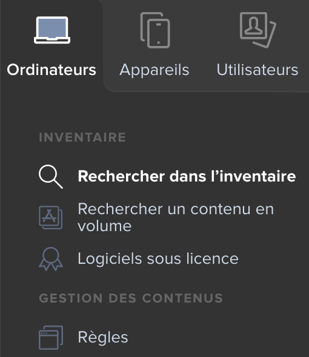
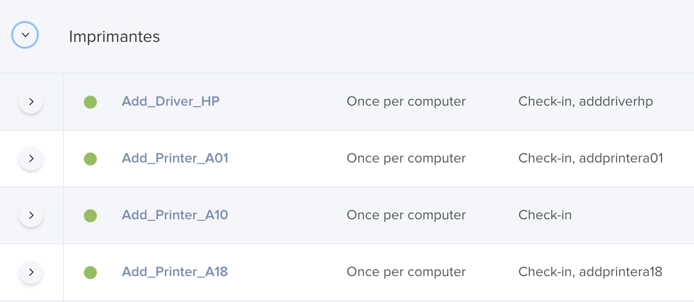
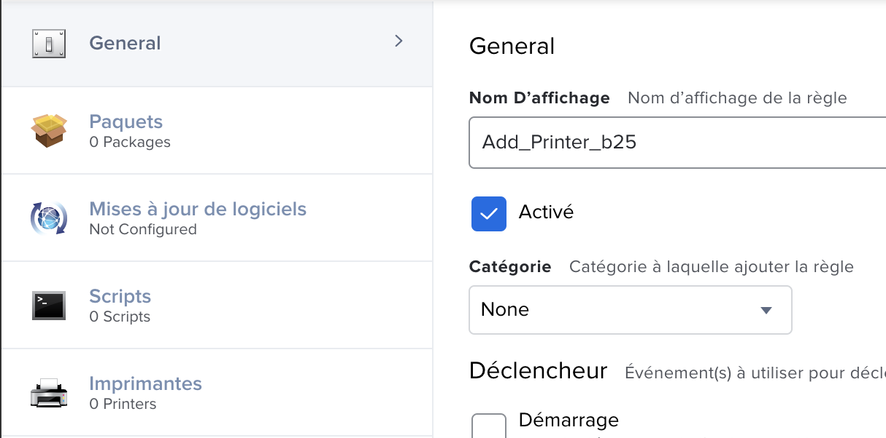
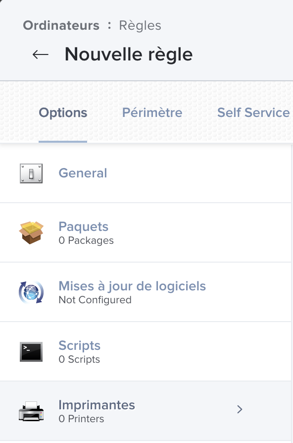
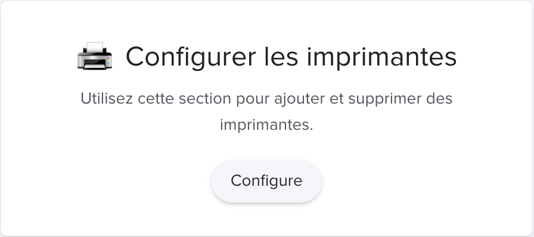
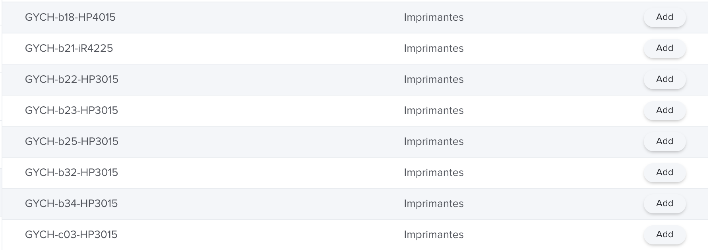
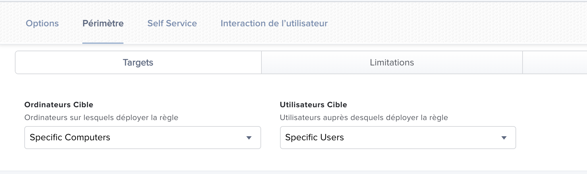
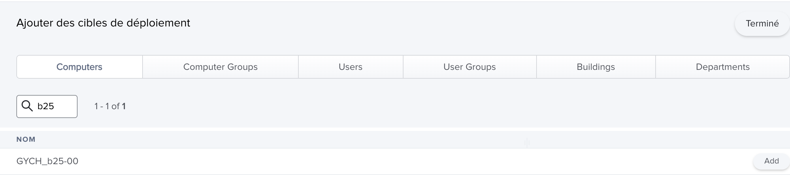

Comment créé une règle pour ajouter une imprimante sur Jamf¶
Description Jamf :¶
C’est une application utilisée par les administrateurs système pour configurer et automatiser les tâches d’administration informatique pour les appareils macOS, iOS
Avant de débuter¶
Il faut ajouter l’impriamte sur le poste, je vous laisse la marche à suivre sur le lien : https://sites.google.com/view/gycha-it/ressources#h.r65nzqlnc3we
{kind=link}
{kind=link}
Début de la marche à suivre :¶
Tout d’abord ouvrez un navigateur et notez https://10.225.232.161:8443/ dans l’URL.
Identifiant |
Mot de passe |
|---|---|
Gychameta |
Gym_09 |

Ensuite dirigez vous sur ordinateur -> Règles
{kind=link}
Aprés vérifiez dans les règles déjà existante s’il y a l’imprimante que vous chercher.
{kind=link}
Si elle n’est pas la crée une nouvelle règle
Donnez lui un nom, en cohérence avec l’imprimante que vous voulez (Exemple : Add_Print_b25)
{kind=link}
Maintenant allez sous imprimantes.
{kind=link}
Cliquez sur “Configure”.
{kind=link}
Ajoutez l’imprimante que vous voulez.
{kind=link}
Pour finir allez dans périmètre.
{kind=link}
Selectionez le groupe ou un ordinateur que vous voulez (vous pouvez en choissir plus) .
{kind=link}
Il manque plus qu’à appuyer sur “Terminer”.
Félicitation vous savez créé une règle pour ajouter une imprimante.